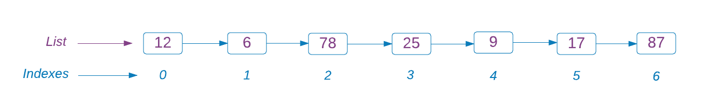
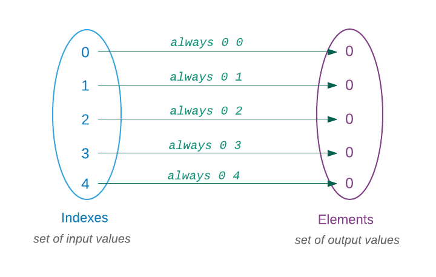

Probrali jsme již řadu funkcí z modulu List ale nedostali jsme se k nejbecnější operaci, prováděné na seznamu a to je přístup k elementům prostřednictvím indexu. Je to proto, že u seznamů to není snadné. V důsledku toho, jak jsou konstruovány, je snadné jimi lineárně traverzovat (procházet) ale přístup k elementu v náhodném pořadí je nákladný.
Dostat se například k poslednímu elementu níže zobrazeného seznamu, vyžaduje traverzovat všemi elementy předcházejícími - což je neefektivní. Můžeme si představit, jak hodně by to bylo neefektivní, kdyby seznam obsahoval tisíce položek.

Žádné strachy - Elm nabízí jinou datovou strukturu, zvanou, Array, u níž je přístup k elementům hračkou. Jinak se arraye velmi podobají seznamům. Téměř každá operace, která může být provedena v seznamu, může být provedena v arrayi.
Vytovoření arraye
Array nemůžeme vytvořit literální syntaxí jako seznam. Nejobvyklejší způsob vytvoření arraye je transformace seznamu.
> import Array
> myArray = Array.fromList [ 1, 2, 3, 4 ]
Array.fromList [1,2,3,4] : Array.Array number
> myArray
Array.fromList [1,2,3,4 ] : Array.Array number Array je první modul z těch, o kterých jsme doposud hovořili, který není automaticky načten replem. Proto jej musíme importovat explicitně. Útvar fromList je funkce, která přijímá seznam a vytváří z něho array. Když jsme zadali definici konstanty myArray, vrátil nám repl Array.fromList [1,2,3,4] : Array.Array number. Celý tento výstup je prezentace arraye, jejíž součástí je seznam [1,2,3,4].

Můžeme rovněž transformovat array na seznam.
> Array.toList myArray
[0,1,2,3,4]Chceme-li při transformaci arraye na seznam připojit ke každé položce její index, můžeme tak učinit funkcí toIndexedList.
> myArray = Array.fromList [ "Doctor", "River", "Clara", "Tardis" ]
Array.fromList ["Doctor","River","Clara","Tardis"]
> Array.toIndexedList myArray
[(0,"Doctor"),(1,"River"),(2,"Clara"),(3,"Tardis")]Někdy potřebujeme inicializovat každý element arraye nějakou hodnotou. Můžeme pro to použít funkci initialize . Následující příklad vytváří seznam se všemi elementy nastavenými na nulu.
> Array.initialize 5 (always 0)
Array.fromList [0,0,0,0,0]Funkce initialize přijímá dva parametry:
- Délku arraye
- Funkci pro generování každého elementu.
Použili jsme funkci always (definovanou v modulu Basics) pro zadání hodnoty 0 každému elementu. Funkce always je definována takto:
always a b = aJe to konstantní funkce, která ignoruje druhý argument a vždy vrací první argument.
- Constant Function
- A constant function in mathematics is a function whose output is the same for every input value.
-

Jiný způsob inicializace arraye se stejnými hodnotami je s užitím funkce repeat.
> Array.repeat 5 0
Array.fromList [0,0,0,0,0]
> Array.repeat 3 "hodor"
Array.fromList ["hodor","hodor","hodor"]Modul Basics také poskytuje funkci zvanou identity, která na rozdíl od funkce always vrací danou hodnotu. Použijme tuto funkci k vytvoření arraye, jehož elementy mají hodnotu stejnou jako jejich indexy.
> Array.initialize 5 identity
Array.fromList [0,1,2,3,4]Na rozdíl od always, není funkce identity konstantní, neboť její výstup závisí na vstupu.
Nastavení a získání hodnoty
Abychom získali element z arraye, musíme zadat jeho index a název arraye funkci get.
> myArray = Array.fromList [ 0, 1, 2, 3, 4 ]
Array.fromList [0,1,2,3,4]
> Array.get 3 myArray
Just 3Funkce get vrací element uvnitř Just. Podobný příklad jsme viděli, když jsme žádali seznam aby nám vydal své čelo (head). Kterak vybalit hodnotu z obálky Just se dozvíte v kapitole 4.
Co se stane, když se pokusíme o přístup k indexu, který neexistuje?
> Array.get 5 myArray
Nothing
> Array.get -1 myArray
NothingMísto chybového hlášení dostáváme Nothing, což je smysluplné. Podobně můžeme zadat hodnotu elementu s určitým indexem použitím funkce set.
> Array.set 3 8 myArray
Array.fromList [0,1,2,8,4]Funkce set přijímá tři argumenty:
- Index elementu, který chceme měnit
- Novou hodnotu elementu, která nahradí dosavadní
- Název araye
Je důležité vědět, že funkce set vrací nový array místo měnění starého. Vytiskneme-li si obsah kolektoru myArray, uvidíme že se vůbec nezměnil.
> myArray
Array.fromList [0,1,2,3,4]Toto chování je konzistentní se všemi ostatními operacemi. Nezáleží na tom, s jakými daty manipulujeme, Elm je nikdy nemění. O neměnnosti budeme podrobněji hovořit v další kapitole.
Ověřování délky
Funkce isEmpty určuje, zda je či není array prázdný, zatímco funkce length vrací počet elementů v arrayi.
> Array.isEmpty (Array.fromList [])
True
> Array.isEmpty (Array.fromList [ "Dolores", "Teddy", "Elsie" ])
False
> Array.length (Array.fromList [])
0
> Array.length (Array.fromList [ 1, 2, 3 ])
3
> Array.length (Array.fromList [ "Daenerys", "Tyrion", "Arya", "Khal Drogo" ])
4Tyto funkce pracují přesně stejným způsobem jako u seznamů.
Spojování arrayů
Funkce append umožňuje spojovat dva arraye.
> array1 = Array.fromList [ 1, 2, 3 ]
Array.fromList [1,2,3]
> array2 = Array.fromList [ 4, 5, 6 ]
Array.fromList [4,5,6]
> Array.append array1 array2
Array.fromList [1,2,3,4,5,6]Ke spojení dvou arrayů nemůžeme použít operátor ++.
> array1 ++ array2
----------------- TYPE MISMATCH -----------------------
The left argument of (++) is causing a type mismatch.
6| array1 ++ array2
^^^^^^
(++) is expecting the left argument to be a:
appendable
But the left argument is:
Array.Array number
Hint: Only strings, text, and lists are appendable.Chceme-li přidat element na konec arraye, můžeme tak učinit funkcí push.
> Array.push 4 array1
Array.fromList [1,2,3,4]Pro přidání elementu na začátek arraye žádná funkce neexistuje. Je to proto, že to je nákladná operace. Každý element musí být posunut o jedno místo vpravo a je-li těchto elementů mnoho, může to chvíli trvat. Přidání elementu na konec je za hubičku, protože se nic nepřemisťuje.

Jeden způsob, jak obejít tento problém, spočívá v přidání stávajícího arraye k arrayi s přidávaným elementem.
> Array.append (Array.fromList [0]) array1
Array.fromList [0,1,2,3]Štěpení arrayů
Pamatujete, jak jsme extrahovali substring z řetězce s použitím funkce slice?
> String.slice 0 5 "Bears. Beets. Battlestar Galactica."
"Bears"
> String.slice 7 12 "Bears. Beets. Battlestar Galactica."
"Beets"Modul Array rovněž poskytuje funkci zvanou slice, která nám umožní získat subsekci z arraye. Stejně jako String.slice přijímá tři parametry:
- Počáteční index subarraye
- Koncový index subarraye
- Array
> myArray = Array.fromList [ 0, 1, 2, 3, 4, 5 ]
Array.fromList [0,1,2,3,4,5]
> Array.slice 0 3 myArray
Array.fromList [0,1,2]Array.slice také extrahuje elementy exkluzivně bez koncového indexu. Můžeme rovněž použít záporné indexy jako ve funkci List.slice.
> myArray
Array.fromList [0,1,2,3,4,5]
> Array.slice 0 -1 myArray
Array.fromList [0,1,2,3,4]Všimněte si, jak jsme vypustili poslední element kolektoru myArray s použitím negativního indexu. Šikovný trik, není-liž pravda?
Mapování, filtrování a redukce (folding) arraye
V kapitole List jsme se podrobněji zabývali operacemi map, filter a fold. Jejich chování je úplně stejné i u arrayů. Prohlédněme si několik příkladů.
Mapping
> Array.map (\x -> x * 2) (Array.fromList [ 1, 2, 3, 4 ])
Array.fromList [2,4,6,8]
> guardians = Array.fromList [ "Star-lord", "Groot", "Gamora", "Drax", "Rocket" ]
Array.fromList ["Star-lord","Groot","Gamora","Drax","Rocket"]
> lengths = Array.map String.length guardians
Array.fromList [9,5,6,4,6]Filtering
> Array.filter (\x -> x < 6) lengths
Array.fromList [5,4]
> isOdd number = if number % 2 == 0 then False else True
<function>
> Array.filter isOdd (Array.fromList [ 0, 1, 2, 3, 4, 5 ])
Array.fromList [1,3,5]
> isHost name = List.member name [ "Dolores", "Teddy", "Maeve" ]
<function>
> westWorldCharacters = Array.fromList [ "William", "Bernard", "Dolores", "Teddy" ]
Array.fromList ["William","Bernard","Dolores","Teddy"]
> Array.filter isHost westWorldCharacters
Array.fromList ["Dolores","Teddy"]Folding from left
> myArray = Array.fromList [ 1, 2, 3, 4 ]
Array.fromList [1,2,3,4]
> Array.foldl (+) 0 myArray
10
> Array.foldl (*) 1 myArray
24
> guardians = Array.fromList [ "Star-lord", "Groot", "Gamora", "Drax", "Rocket" ]
Array.fromList ["Star-lord","Groot","Gamora","Drax","Rocket"]
> Array.foldl (\x a -> (String.length x) + a) 0 guardians
30Folding from right
> myArray = Array.fromList [ 4, 2, 3 ]
Array.fromList [4,2,3]
> Array.foldr (^) 1 myArray
65536List versus Array
Nyní, když víme, co seznamy a arraye jsou, nabízí se důležitá otázka: který kolektor bychom měli používat a kdy? Protože seznamy nemají snadný přístup k elementům pomocí indexů, nemáme žádný výběr než použít array, potřebujeme-li poziční přístup. Ve všech ostatních případech doporučuji používat seznamy, protože jsou standardní volbou pro prezentaci sekvencí hodnot v Elmu. Navíc, vytvoření seznamu je snadné s pomocí hranatých závorek, zatímco vytvoření arraye je poněkud složitější. Musíme nejprve vytvořit seznam a potom jej konvertovat na array funkcí fromList.